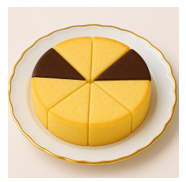
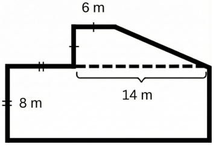
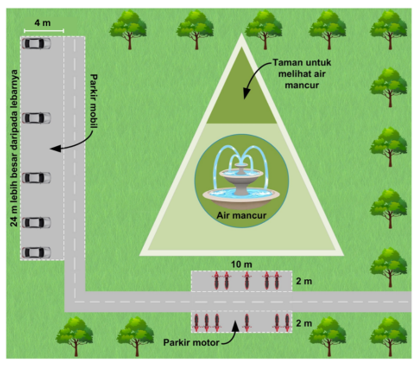
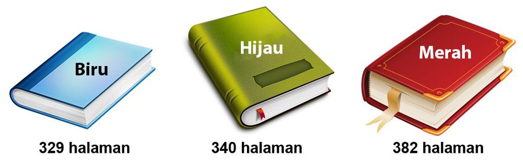
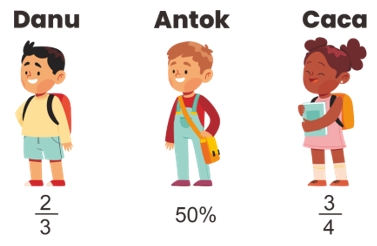
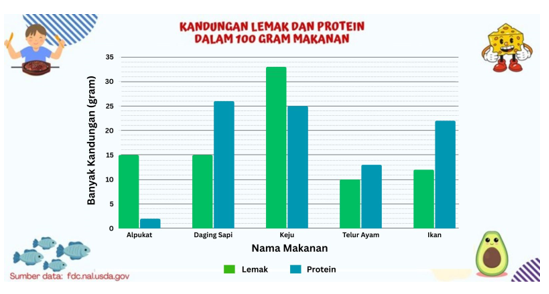
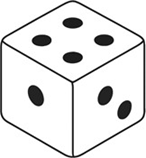

PAKET SOAL TKA SD/MI – Matematika
Mata Pelajaran: Matematika | Jumlah Soal: 73
Petunjuk: Pilihlah salah satu jawaban yang paling tepat. Kunci jawaban tersedia pada file terpisah.
Soal 1. \( 120\% \, -\, 3\, +\, 2\, \times \, 0,75\, +\, \frac {2} {3}\, =\, .... \)
A. \( \frac {11} {30} \)
B. \( \frac {49} {60} \)
C. \( \frac {31} {30} \)
D. \( \frac {98} {60} \)
Soal 2. Pak Bayu dan keluarganya tinggal di Kota Yogyakarta dan berencana untuk liburan ke Semarang. Diketahui jarak Yogyakarta-Semarang 140 km dan kecepatan rata-rata mobil Pak Bayu 80 km/jam. Pak Bayu dan keluarga berangkat dari rumah pukul 06.00.Apabila di tengah perjalanan mereka berhenti selama 15 menit untuk membeli oleh-oleh, pukul berapakah Pak Bayu dan keluarga tiba di Semarang?
A. 07.45
B. 08.00
C. 08.45
D. 09.00
Soal 3. Ibu pergi ke pasar membeli 3 kg buah. Di dalam keranjang belanja ibu, terdapat dua buah alpukat mentega dengan berat 1,25 kg dan sisanya adalah tujuh buah mangga kweni.Berat satu buah mangga kweni adalah ….
A. 0,2 kg
B. 0,25 kg
C. 0,3 kg
D. 0,35 kg
Soal 4. Bu Guru menugaskan Doni untuk membawa sebuah kotak yang dapat menampung 64 kubus satuan. Kubus satuan adalah kubus yang mempunyai rusuk 1 cm. Di rumah, Doni memiliki beberapa macam kotak dengan berbagai ukuran.Di antara pilihan berikut, kotak mana sajakah yang harus dibawa oleh Doni? Pilihlah jawaban yang benar! Jawaban benar lebih dari satu.
A. Kotak berukuran 8 cm × 2 cm × 4 cm
B. Kotak berukuran 4 cm × 4 cm × 4 cm
C. Kotak berukuran 4 cm × 3 cm × 5 cm
Soal 5. Dio sedang membantu ayah memotong batang rotan untuk dijadikan stik pewangi ruangan. Ayah mempunyai batang rotan dengan panjang 320 cm. Ayah ingin membuat stik pewangi ruangan sebanyak mungkin dengan panjang stik masing-masing 15 cm.Sisa batang rotan yang tidak terpakai untuk membuat stik pewangi ruangan adalah sepanjang ….
A. 4 cm
B. 5 cm
C. 6 cm
D. 7 cm
Soal 6. Murid-murid SD Cerdas, SD Pelita, dan SD Mentari melakukan kegiatan olahraga di lapangan bola yang sama. Jadwal mereka melakukan kegiatan olahraga tidak sama. Murid-murid SD Cerdas melakukan kegiatan olahraga setiap 2 minggu sekali. Murid-murid SD Pelita melakukan kegiatan olahraga setiap 3 minggu sekali. Murid-murid SD Mentari melakukan kegiatan olahraga setiap 4 minggu sekali. Hari ini ketiga SD tersebut melakukan kegiatan olahraga secara bersamaan.Setiap periode waktu berapakah murid ketiga SD tersebut akan bertemu dalam kegiatan olahraga di lapangan?
A. 4 minggu
B. 6 minggu
C. 12 minggu
D. 18 minggu
Soal 7. Misal \( a\, =\, 5\, -\, \frac {7} {2} \) dan \( b\, =\, \frac {3} {4}\, -\, \frac {1} {2} \).Maka \( a\, -\, 2b\, = \).....
A. 1
B. \( 1\frac {1} {4} \)
C. 2
D. \( 2\frac {1} {4} \)
Soal 8. Desti mendapatkan hadiah satu loyang kue pada hari ulang tahunnya. Desti memotong kuenya menjadi beberapa bagian seperti yang terlihat pada gambar. Beberapa potong kue berwarna cokelat dan beberapa potong lainnya berwarna kuning.

Berapa bagiankah kue yang berwarna cokelat dari keseluruhan kue?
A. \( \frac {1} {8} \)
B. \( \frac {1} {4} \)
C. \( \frac {1} {2} \)
D. \( \frac {3} {4} \)
Soal 9. Menjelang tahun ajaran baru, Toko Buku Ceria memberikan diskon 10% untuk semua jenis buku. Diketahui harga buku gambar adalah \( \frac {1} {2} \) dari harga buku komik. Harga buku tulis adalah 0,75 kali harga buku komik. Diketahui harga buku komik adalah Rp24.000,00. Harga buku gambar dan buku tulis setelah dikenakan diskon adalah ....
A. Rp18.000,00
B. Rp24.000,00
C. Rp27.000,00
D. Rp30.000,00
Soal 10. Pak Boni memiliki sebidang tanah berbentuk bangun sebagai berikut.

Berapakah keliling bidang tanah Pak Boni?
A. 58 m
B. 68 m
C. 72 m
D. 96 m
Soal 11. Untuk meningkatkan minat membaca siswa, perpustakaan di SD Cahaya mengadakan kegiatan “Ayo Membaca Buku” untuk murid kelas 6. Jumlah peserta dari Kelas A sebanyak 28 siswa, dari Kelas B sebanyak 36 siswa, dan dari Kelas C sebanyak 32 siswa. Setiap siswa akan mendapatkan 3 buah buku bacaan.Jika 1 dus berisi 24 buku, berapa dus buku yang dibutuhkan untuk kegiatan tersebut?
A. 8 dus
B. 10 dus
C. 12 dus
D. 24 dus
Soal 12. Pada hari Sabtu, Andi, Beni, Citra, dan Dika mengikuti kegiatan “Lari Sehat” di lapangan desa. Mereka semua menargetkan untuk menyelesaikan jarak lari yang sama, yaitu 10 km. Hingga pukul 08.00, diperoleh data sebagai berikut.Andi telah menempuh 0,4 bagian dari total jarak.Beni telah menempuh 60% dari total jarak.Citra telah menempuh \( \frac {1} {3} \) bagian dari total jarak.Dika telah menempuh 5,5 km dari total jarak.Siapakah yang telah menempuh jarak lari sebesar \( \frac {3} {5} \) dari total jarak?
A. Andi
B. Beni
C. Citra
D. Dika
Soal 13. Sebuah bangun datar memiliki sifat-sifat sebagai berikut:Keempat sisinya sama panjang.Memiliki dua pasang sisi sejajar.Diagonal-diagonalnya saling berpotongan tegak lurus.Sudut-sudut yang berhadapan sama besar.Berdasarkan sifat-sifat di atas, apakah nama bangun datar tersebut?
A. Persegi
B. Persegi panjang
C. Belah ketupat
D. Layang-layang
Soal 14. Pada hari Minggu, Rani mengikuti kegiatan belajar menari di sanggar seni.Rani berangkat dari rumah pukul 07.25.Perjalanan menuju sanggar memerlukan waktu 45 menit.Kegiatan belajar menari berlangsung selama 1 jam 35 menit.Setelah kegiatan selesai, Rani beristirahat di sanggar selama 20 menit sebelum pulang.Pukul berapakah Rani meninggalkan sanggar untuk pulang?
A. 09.45
B. 10.00
C. 10.05
D. 10.25
Soal 15. TAMAN KOTATaman kota merupakan salah satu fasilitas hiburan yang sangat bermanfaat bagi warga sekitar. Di taman terdapat banyak pohon sehingga terasa sejuk dan segar. Berikut merupakan salah satu desain denah taman kota.

Perhatikan tempat parkir mobil di taman kota. Lebar jalan yang disediakan untuk parkir satu mobil adalah 2 meter. Satu mobil baru saja keluar dari parkiran. Berapa mobil lagi yang dapat diparkir di area tersebut sekarang?
Soal 16. HOBI MEMBACA BUKUDanu, Antok, dan Caca hobi membaca buku. Setiap minggu mereka akan membaca satu dari tiga buku berikut. Buku yang dibaca setiap anak berbeda-beda setiap minggunya.

Pada minggu pertama, Danu membaca buku biru, Antok membaca buku hijau, dan Caca membaca buku merah. Setiap hari Kamis, mereka membandingkan banyak halaman yang sudah dibaca. Berikut ini gambar yang menginformasikan banyak bagian buku yang sudah dibaca oleh Danu, Antok, dan Caca sampai hari Kamis minggu pertama.

Berapa persen dari seluruh halaman buku yang sudah selesai dibaca oleh Caca?
Soal 17. LEMAK SEHAT UNTUK ANAKTahukah kamu bahwa lemak dan protein merupakan nutrisi penting untuk tubuh? Kebutuhan lemak dan protein harus terpenuhi agar kesehatan tubuh terjaga. Lemak dan protein sangat mudah ditemukan bahkan dalam satu jenis makanan, lho. Berikut ini informasi tentang makanan yang mengandung lemak dan protein.

Anak berusia 10 - 12 tahun membutuhkan protein paling sedikit 55 gram dalam sehari. Jika disediakan makanan berikut dengan berat masing-masing 250 gram, tentukanlah makanan yang dapat memenuhi kebutuhan protein harian mereka! Pilihlah jawaban yang benar! Jawaban benar lebih dari satu.
A. Daging sapi
B. Telur ayam
C. Ikan
Soal 18. Mae bermain ular tangga menggunakan sebuah dadu. Diketahui bahwa jumlah titik pada setiap dua sisi berlawanan pada dadu adalah sama. Pada saat giliran Mae bermain, Mae melempar dadunya. Berikut adalah dadu hasil lemparan Mae.

Pada dadu tersebut, banyak titik yang ada di sisi bawah adalah ….
Soal 19. Setiap bulan Ramadan, SD Harapan mengadakan bakti sosial. Mereka membagi sembako yang berisi 3 kg beras, dua bungkus gula pasir dengan berat masing-masing kemasan 5 hg, dan lima bungkus mi instan dengan berat per bungkus 85 g.Pilihlah pernyataan yang benar sesuai dengan informasi tersebut! Jawaban benar lebih dari satu.
A. Total berat semua isi paket adalah 4.425 gram.
B. Berat mi instan dalam paket tersebut lebih dari 0,5 kilogram.
C. Satu kemasan gula pasir lebih berat dibandingkan seluruh mi instan.
Soal 20. Pak Bakri mempunyai lahan seluas 3,5 hektar. Pada lahan tersebut, \( \frac {1} {5} \) bagiannya akan ditanami cabai merah, \( \frac {1} {3} \) bagiannya akan ditanami tomat, dan sisanya akan ditanami daun bawang.Berapakah luas lahan yang akan ditanami tomat dan daun bawang?
A. 1,63 hektar.
B. 1,87 hektar.
C. 2,33 hektar.
D. 2,80 hektar.
Soal 21. Sebuah bak berbentuk kubus memiliki volume sebesar \( 9\, {m}^{3} \)Bak tersebut akan diubah menjadi sebuah balok dengan panjangnya 2 kali dari ukuran bak sebelumnya, lebarnya \( \frac {1} {2} \) dari ukuran bak sebelumnya, dan tingginya sama dengan ukuran bak sebelumnya.Volume dari bak yang baru adalah ….
A. 4,5 m3
B. 9 m3
C. 18 m3
D. 22,5 m3
Soal 22. Pada acara ulang tahun sekolah, jumlah seluruh kue pastel adalah 192 biji, sedangkan piring yang disiapkan ada 24 piring. Jika kue dibagi rata, maka jumlah kue pastel pada masing-masing piring adalah…
A. 9 kue
B. 8 kue
C. 7 kue
D. 6 kue
Soal 23. Andi, Budi, dan Candra latihan bulu tangkis di gelanggang olahraga yang sama. Andi latihan setiap 4 hari sekali, Budi setiap 5 hari sekali, dan Candra setiap 10 hari sekali. Jika pada tanggal 20 Oktober 2026 mereka latihan bersama-sama, tanggal berapakah mereka akan latihan bersama-sama lagi berikutnya?
A. 30 Oktober 2026
B. 4 November 2026
C. 9 November 2026
D. 10 November 2026
Soal 24. Perhatikan tumpukan kubus satuan! Terdapat 3 lapis kubus. Lapis paling bawah berbentuk alas 3 × 3 kubus penuh (9 kubus). Lapis kedua di atasnya hanya terisi 4 kubus, dan lapis teratas di tengah hanya ada 1 kubus. Banyaknya seluruh kubus satuan pada tumpukan tersebut adalah…
A. 12 kubus
B. 13 kubus
C. 14 kubus
D. 15 kubus
Soal 25. [Bacalah teks berikut!]Data PengukuranPanjang meja belajar: 1,2 m
Tinggi lemari pakaian: 20 cm
Panjang pensil: 15 cmDina mencatat hasil pengukuran benda-benda yang ada di rumahnya sebagai berikut. Berdasarkan data tersebut, pilih pernyataan hasil pengukuran yang benar, logis, dan masuk akal!
A. Panjang meja belajar 1,2 m.
B. Tinggi lemari pakaian 20 cm.
C. Panjang pensil 15 cm.
Soal 26. Sebuah kontainer penyimpanan berbentuk balok dengan ukuran panjang 6 m, lebar 3 m, dan tinggi 2 m. Kontainer tersebut akan diisi penuh dengan kotak kardus makanan berukuran panjang 60 cm, lebar 50 cm, dan tinggi 40 cm. Berapa banyak kotak kardus yang dapat dimuat di dalam kontainer tersebut?
A. 100 kardus
B. 300 kardus
C. 500 kardus
D. 600 kardus
Soal 27. Pada hari Minggu, Sinta melakukan serangkaian kegiatan persiapan sekolah. Sinta mencuci sepatu 35 menit, merapikan meja belajar 20 menit, dan siap-siap & mandi 15 menit. Sinta beristirahat 10 menit setelah mencuci sepatu. Jika jam dinding menunjukkan waktu mulai kegiatan adalah pukul 07.15, pukul berapa Sinta selesai melakukan seluruh kegiatan tersebut?
A. 08.25
B. 08.35
C. 08.45
D. 08.55
Soal 28. Paman membeli 0,75 kg gula pasir, 1/2 kg kopi, dan 1,5 kg tepung terigu. Urutan belanjaan Paman dari yang paling ringan ke paling berat adalah…
A. kopi, gula pasir, tepung terigu
B. gula pasir, kopi, tepung terigu
C. tepung terigu, gula pasir, kopi
D. kopi, tepung terigu, gula pasir
Soal 29. Sebuah lapangan taman memiliki bentuk segi banyak dengan ukuran panjang setiap sisinya sebagai berikut: sisi atas 8 m, sisi kanan atas 12 m, sisi kanan bawah 6 m, sisi bawah 8 m, sisi kiri bawah 5 m, dan sisi kiri atas 15 m. Keliling lapangan taman tersebut adalah…
A. 48 m
B. 54 m
C. 52 m
D. 60 m
Soal 30. Farel menemukan sebuah hiasan dinding berbentuk heksagonal (segi enam beraturan). Jika segi enam tersebut dibagi menjadi 6 buah segitiga sama sisi yang berukuran sama dengan alas 10 cm dan tinggi 8 cm, maka luas satu pias hiasan dinding tersebut adalah…
A. 40 cm²
B. 80 cm²
C. 240 cm²
D. 480 cm²
Soal 31. Pak Budi memiliki kebun buah berbentuk persegi panjang dengan ukuran panjang 180 m dan lebar 120 m. Pak Budi ingin memagari sekeliling kebunnya dengan kawat pagar. Jika 1 gulung kawat memiliki panjang 50 m, maka Pak Budi membutuhkan kawat pagar minimal…
A. 10 gulung
B. 12 gulung
C. 14 gulung
D. 16 gulung
Soal 32. Pengrajin kayu membuat beberapa jenis bingkai foto. Bingkai Jenis A berbentuk segi delapan beraturan (oktagon). Pengrajin hendak memasang hiasan manik-manik tepat di setiap sudut bingkai Jenis A tersebut. Banyak manik-manik yang dibutuhkan untuk satu buah bingkai Jenis A adalah…
A. 6 buah
B. 7 buah
C. 8 buah
D. 10 buah
Soal 33. Dua garis sejajar g dan h dipotong oleh sebuah garis transversal. Diketahui besar salah satu sudut sehadap adalah 70°. Pilih pernyataan berikut yang benar!
A. Besar sudut yang bertolak belakang dengannya adalah 70°.
B. Besar sudut yang berpelurus dengannya adalah 110°.
C. Jumlah dua sudut yang saling berpelurus tersebut adalah 360°.
Soal 34. Perhatikan diagram batang hobi olahraga murid kelas VI SD Nusantara berikut! Berdasarkan diagram tersebut, jika seluruh data berjumlah 270 murid, selisih banyaknya murid yang menyukai basket dan sepak bola adalah…
A. 12 orang
B. 18 orang
C. 24 orang
D. 30 orang
Soal 35. Daftar menu di Cafe "Ceria": Nasi Goreng Rp20.000,00; Mie Goreng Rp15.000,00; Es Teh Rp5.000,00; Jus Buah Rp10.000,00. Budi memesan 1 Nasi Goreng dan 1 Jus Buah. Siti memesan 1 Mie Goreng dan 1 Es Teh. Budi dan Siti membawa uang total Rp100.000,00 untuk membayar seluruh pesanan mereka. Pilihlah pernyataan yang benar!
A. Total biaya pesanan Budi dan Siti seluruhnya adalah Rp50.000,00.
B. Uang kembalian yang mereka terima sebesar Rp50.000,00.
C. Uang kembalian tersebut dapat digunakan untuk membeli 4 porsi Nasi Goreng.
Soal 36. [Bacalah teks berikut!]Tabel Peminjaman Buku Perpusda Minggu Ini
| Jenis Buku | Senin | Selasa | Rabu | Kamis |
|---|
| Sains | 12 | 15 | 8 | 20 |
| Novel | 18 | 10 | 14 | 12 |
| Komik | 15 | 22 | 10 | 18 |
Berdasarkan tabel tersebut, pada hari Senin dan Rabu jumlah buku Sains dan Komik yang dipinjam murid sebanyak… buku.
Soal 37. Bu Rina mempunyai 48 pensil yang akan dibagikan kepada beberapa siswanya secara merata tanpa ada sisa. Berdasarkan cerita di atas, manakah pernyataan yang benar?
A. Ada 6 siswa, masing-masing mendapat 8 pensil.
B. Ada 8 siswa, masing-masing mendapat 7 pensil.
C. Ada 12 siswa, masing-masing mendapat 4 pensil.
Soal 38. [Bacalah teks berikut!]Tabel Jumlah Anggota Ekstrakurikuler
| No | Jenis Ekstrakurikuler | Jumlah Peserta |
|---|
| 1 | Pramuka | 30 |
| 2 | Catur | 8 |
| 3 | Paskibra | 25 |
| 4 | Seni Rupa | 14 |
Sekolah akan menutup ekstrakurikuler jika anggotanya kurang dari 15 siswa. Jika pembina ingin Catur dan Seni Rupa tetap dibuka, maka total siswa tambahan yang perlu ditambahkan minimal adalah…
A. 8 siswa yang terdiri dari 7 peserta Catur dan 1 peserta Seni Rupa
B. 8 siswa yang terdiri dari 1 peserta Catur dan 7 peserta Seni Rupa
C. 10 siswa yang terdiri dari 2 peserta Catur dan 8 peserta Seni Rupa
D. 12 siswa yang terdiri dari 8 peserta Catur dan 4 peserta Seni Rupa
Soal 39. Sebuah toko roti memproduksi 1.420 buah roti pada minggu pertama, 2.150 buah roti pada minggu kedua, dan 1.830 buah roti pada minggu ketiga. Total roti yang diproduksi toko tersebut selama 3 minggu adalah…
A. 5.300 buah
B. 5.400 buah
C. 5.390 buah
D. 5.410 buah
Soal 40. Pak Doni membeli 2 kemasan beras, masing-masing seberat 4 kg dan 6 kg. Seluruh beras tersebut akan dimasukkan ke dalam kantong-kantong kecil. Setiap 1 kg beras dapat digunakan untuk membuat 4 porsi nasi kotak. Jika setiap kantong plastik dapat memuat 8 porsi nasi kotak, bentuk perhitungan yang tepat untuk menentukan jumlah kantong plastik yang dibutuhkan Pak Doni adalah…
A. (4 + 6) × 4 : 8
B. (6 - 4) × 4 : 8
C. (4 + 6) : 4 × 8
D. (6 - 4) : 4 × 8
Soal 41. Pak Budi mempunyai 5 1/2 kg gula pasir. Gula tersebut dibagikan sama banyak kepada 2 adiknya. Setiap adiknya mendapat bagian yang sama. Pak Budi membeli lagi 3 kg gula pasir dan menggunakannya 1 1/4 kg untuk membuat es sirup. Berapa kilogram sisa gula pasir yang dimiliki Pak Budi?
A. 4 1/2 kg
B. 2 1/4 kg
C. 4 1/4 kg
D. 3 3/4 kg
Soal 42. Toko buku "Cerdas" memiliki beberapa eksemplar buku tulis. Setelah mendapat pasokan tambahan sebanyak 215 buku, jumlah seluruh buku tulis di toko tersebut menjadi 450 buku. Banyak buku tulis yang dimiliki toko sebelum mendapat pasokan tambahan adalah…
A. 665 buku
B. 245 buku
C. 235 buku
D. 225 buku
Soal 43. [Bacalah teks berikut!]Data Koleksi BukuBuku Komik: 3.125 buah
Buku Novel: 2.450 buah
Buku Pelajaran: 4.210 buahPerhatikan data koleksi buku di Perpustakaan Kota berikut. Berdasarkan ilustrasi tersebut, pilih pernyataan yang benar!
A. Jumlah buku komik dan novel adalah 5.575 buah.
B. Jumlah seluruh buku di perpustakaan adalah 9.785 buah.
C. Selisih buku pelajaran dan komik adalah 1.185 buah.
Soal 44. Bu Guru menyediakan beberapa kartu bilangan pecahan di dalam kardus. Beberapa murid diminta Bu Guru untuk mengambil kartu tersebut, setiap murid hanya boleh mengambil satu kartu. Nama murid dan kartu yang diambil tampak pada tabel berikut!
| \( \text{Nama Murid} \) | \( \text{Kartu Bilangan} \) |
|---|
| \( \text{Amsyar} \) | \( \frac{12}{8} \) |
| \( \text{Alfian} \) | \( 1 \frac{5}{10} \) |
| \( \text{Arkaan} \) | 1,2 |
| \( \text{Aisyah} \) | \( \frac{20}{12} \) |
| \( \text{Aya} \) | \( \frac{6}{5} \) |
Pecahan senilai ditunjukkan oleh kartu bilangan yang diambil oleh...
\( (A) \) Amsyar, Alfian, dan Aisyah
\( (B) \) Arkaan, Aisyah, dan Aya
\( (C) \) Amsyar dan Alfian
\( (D) \) Aya dan Aisyah
Soal 45. Nugi memiliki kotak kayu berbentuk kubus dan digunakannya untuk menyimpan rubik, kotak tersebut memiliki ketebalan dan panjang sisi seperti gambar.
Berdasarkan ilustrasi tersebut, tentukan Benar atau Salah untuk setiap pernyataan berikut?
Luas sisi bagian dalam kotak kayu tersebut \( 4.056\ \text{cm}^{2} \)
\( \text{Benar} \)\( \text{Salah} \) Luas alas sisi bagian luar kotak kayu tersebut \( 676\ \text{cm}^{2} \)
\( \text{Benar} \) \( \text{Salah} \) Volume kotak tersebut adalah \( 13.824\ \text{cm}^{2} \)
\( \text{Benar} \) \( \text{Salah} \) Volume rubik adalah \( 27\ \text{cm}^{3} \)
\( \text{Benar} \) \( \text{Salah} \)
A. \( \text{Benar} \)
B. \( \text{Salah} \)
C. \( \text{Benar} \)
D. \( \text{Salah} \)
E. \( \text{Benar} \)
F. \( \text{Salah} \)
G. \( \text{Benar} \)
H. \( \text{Salah} \)
Soal 46. Perhatikan resep kue berikut!
Untuk membuat kue So Happy tersebut Ustadzah Fera menghabiskan \( 2\frac{1}{4}\ \text{kg} \) selai nanas. Persediaan bahan yang dimiliki Ustadzah Fera adalah tepung terigu \( 0,5\ \text{kg} \) dan gula pasir \( 2,5\ \text{kg} \).
Pernyataan berikut yang sesuai dengan ilustrasi adalah....
\( (A) \) Tepung terigu yang harus dibeli Ustadzah Fera ada \( 0,07\ \text{kg} \)
\( (B) \) Banyak mentega yang dibutuhkan ada \( 1\frac{7}{8}\ \text{kg} \) dan keju Cheddar \( 1\frac{1}{6}\ \text{kg} \)
\( (C) \) Selisih selai nanas dan gula pasir yang digunakan
adalah \( 1,5\ \text{kg} \)
\( (D) \) Jumlah mentega dan gula pasir yang digunakan pada setiap resep adalah \( 558\ \text{kg} \)
Soal 47. SD IT Luqman Al Hakim mengadakan penggalangan donasi korban banjir. Hasil penggalangan dana tersebut dibelanjakan alat mandi, diantaranya \( 60 \) botol shampoo, \( 84 \) sabun batang, dan \( 48 \) pasta gigi. Alat mandi tersebut dikemas ke dalam bingkisan. Setiap bingkisan berisi alat mandi dengan jumlah dan jenis yang sama.
Tentukan Benar atau Salah untuk setiap pernyataan berikut.
Terdapat \( 12 \) korban banjir yang menerima pemberian donasi.
\( \text{Benar} \)\( \text{Salah} \) Setiap bingkisan terdapat \( 7 \) sabun batang.
\( \text{Benar} \) \( \text{Salah} \) Banyak pasta gigi dalam setiap bingkisan lebih banyak daripada sampo.
\( \text{Benar} \) \( \text{Salah} \)
A. \( \text{Benar} \)
B. \( \text{Salah} \)
C. \( \text{Benar} \)
D. \( \text{Salah} \)
E. \( \text{Benar} \)
F. \( \text{Salah} \)
Soal 48. Nabil, Abi, dan Zio mengikuti bimbingan music untuk anak-anak. Nabil mengambil bimbingan
paket B, Ali paket A, dan Zio paket C. Jadwal bimbingan music terlihat pada gambar.
Berdasarkan ilustrasi di atas, tentukan apakah setiap pernyataan berikut Benar atau Salah.
Nabil dan Zio masuk kursus bersama-sama untuk ketiga kalinya pada tanggal 30 Januari 2025.
\( \text{Benar} \)\( \text{Salah} \)Nabil, Ali, dan Zio masuk kursus bersama-sama pertama kalinya pada tanggal 12 Januari 2025.
\( \text{Benar} \)\( \text{Salah} \)Selama bulan Januari, Ali bimbingan musik lebih banyak daripada Zio.
\( \text{Benar} \)\( \text{Salah} \)Pada tanggal 24 Januari 2025 Nabil, Ali, dan Zio bimbingan musik bersama-sama untuk ketiga kalinya.
\( \text{Benar} \)\( \text{Salah} \)
A. \( \text{Benar} \)
B. \( \text{Salah} \)
C. \( \text{Benar} \)
D. \( \text{Salah} \)
E. \( \text{Benar} \)
F. \( \text{Salah} \)
G. \( \text{Benar} \)
H. \( \text{Salah} \)
Soal 49. Berikut adalah sifat-sifat bangun datar:
Memiliki sepasang sudut sama besar Memiliki dua pasang sudut sama besar Semua sudutnya sama besar Diagonal-diagonalnya sama panjang dan perpotongannya tidak tegak lurus Diagonal-diagonalnya tidak sama panjang dan perpotongannya tidak tegak lurus Memiliki sepasang sisi sejajar tidak sama panjang
Sifat-sifatnya trapezium sama kaki ditunjukkan oleh nomor....
\( (A) \) (1), (3), dan (5)
\( (B) \) (1), (4), dan (6)
\( (C) \) (2), (4), dan (6)
\( (D) \) (2), (5), dan (6)
Soal 50. Tono membuat mainan dadu dari kertas karton seperti gambar. Mata dadu yang saling berhadapan jumlahnya sama, yaitu \( 7 \). Sebelumnya Tono membuat desain atau pola berupa jaring-jaring kubus.
Pola yang dibuat Tono adalah...
\( (A) \)
\( (B) \)
\( (C) \)
\( (D) \)
Soal 51. Hafuza menyusun puzzle tiga dimensi berupa kubus warna-warni dengan susunan seperti pada gambar. Selanjutnya Hafuza menggambar puzzle yang terbentuk tampak dari atas, depan, dan samping.
Gambar yang benar ditunjukkan oleh nomor...
\( (A) \) I, II, dan III
\( (B) \) I, III, dan IV
\( (C) \) I dan II saja
\( (D) \) II dan III saja
Soal 52. Perhatikan gambar berikut!
Abidzar membuat layang-layang meggunakan kertas minyak. Layang-layang membentuk rangka seperti pada gambar. Panjang \( AC= 64\ \text{cm} \) dan panjang \( OD=14\ \text{cm} \). Luas kertas minyak minimal yang terbentuk adalah....
\( (A) \) \( 156\ \text{cm}^{2} \)
\( (B) \) \( 378\ \text{cm}^{2} \)
\( (C) \) \( 448\ \text{cm}^{2} \)
\( (D) \) \( 896\ \text{cm}^{2} \)
Soal 53. Perhatikan gambar berikut!
Berdasarkan ilustrasi gambar bangun datar gabungan tersebut, tentukan apakah setiap pernyataan berikut Benar atau Salah.
Luas belah ketupat adalah \( 96\ \text{cm}^{2} \).
\( \text{Benar} \)\( \text{Salah} \)Luas gabungan bangun datar di atas adalah \( 736\ \text{cm}^{2} \).
\( \text{Benar} \)\( \text{Salah} \)Bangun datar trapesium lebih luas daripada bangun datar belah ketupat.
\( \text{Benar} \)\( \text{Salah} \)Selisih luas bangun datar belah ketupat dengan trapesium adalah \( 32\ \text{cm}^{2} \).
\( \text{Benar} \)\( \text{Salah} \)
A. \( \text{Benar} \)
B. \( \text{Salah} \)
C. \( \text{Benar} \)
D. \( \text{Salah} \)
E. \( \text{Benar} \)
F. \( \text{Salah} \)
G. \( \text{Benar} \)
H. \( \text{Salah} \)
Soal 54. Pak Zahid memiliki tanah di daerah yang udaranya sejuk, air pegunungan jernih mengalir sepanjang waktu sehingga cocok untuk tempat tinggal sekaligus untuk berkebun dan memelihara ikan. Denah tanah dan peruntukannya tampak seperti gambar.
Keliling tanah miliki Pak Zahid adalah....
\( (A) \) \( 242\ \text{m} \)
\( (B) \) \( 142\ \text{m} \)
\( (C) \) \( 66\ \text{m} \)
\( (D) \) \( 33\ \text{m} \)
Soal 55. Urutan pecahan berikut dari besar ke kecil ditunjukkan oleh...
\( (A) \) \( \frac{11}{8} \); \( 150\% \); \( 1\frac{1}{3} \); \( 1,4 \); \( \frac{27}{20} \)
\( (B) \) \( 150\% \); \( 1,4 \); \( \frac{11}{8} \); \( \frac{27}{20} \); \( 1\frac{1}{3} \)
\( (C) \) \( 1\frac{1}{3} \); \( \frac{27}{20} \); \( \frac{11}{8} \); \( 1,4 \); \( 150\% \)
\( (D) \) \( 150\% \); \( 1,4 \); \( \frac{27}{20} \); \( \frac{11}{8} \); \( 1\frac{1}{3} \)
Soal 56. Nasywa memiliki akuarium berbentuk kubus dengan panjang sisi bagian dalam \( 30\ \text{cm} \). Akuarium berisi air sebanyak \( \frac{1}{2} \) bagian.
Kemudian Nasywa menambahkan air ke dalam akuarium hingga volumenya menjadi \( 24.750\ \text{cm}^{3} \). Volume air yang ditambahkan Nasywa adalah....
\( (A) \) \( 2.250\ \text{cm}^{3} \)
\( (B) \) \( 3.750\ \text{cm}^{3} \)
\( (C) \) \( 11.250\ \text{cm}^{3} \)
\( (D) \) \( 11.750\ \text{cm}^{3} \)
Soal 57. Perhatikan ilustrasi berikut!
Saat pelajaran matematika Ustadzah Fera menunjukkan sebuah kubus dan dua buah balok terbuat dari kayu jati. Volume sebuah kubus tersebut sama dengan volume dua buah balok. Panjang sisi kubus yang ditunjukkan oleh Ustadzah Fera adalah \( 24\ \text{cm} \). Sedangkan ukuran setiap balok kayu panjangnya \( 18\ \text{cm} \) dan lebar \( 24\ \text{cm} \).
Berdasarkan ilustrasi di atas, tentukan apakah setiap pernyataan berikut Benar atau Salah.
Volume sebuah balok \( 6.912\ \text{cm}^{3} \).
\( \text{Benar} \)\( \text{Salah} \)Volume kubus \( 6.912\ \text{cm}^{3} \).
\( \text{Benar} \)\( \text{Salah} \)Tinggi setiap balok \( 16\ \text{cm} \).
\( \text{Benar} \)\( \text{Salah} \)Tinggi setiap balok \( 32\ \text{cm}^{3} \).
\( \text{Benar} \)\( \text{Salah} \)
A. \( \text{Benar} \)
B. \( \text{Salah} \)
C. \( \text{Benar} \)
D. \( \text{Salah} \)
E. \( \text{Benar} \)
F. \( \text{Salah} \)
G. \( \text{Benar} \)
H. \( \text{Salah} \)
Soal 58. Perhatikan gambar berikut!
Berdasarkan gambar di atas, tentukan Benar atau Salah untuk setiap pernyataan berikut!
Sudut \( A \) merupakan sudut lancip.
\( \text{Benar} \)\( \text{Salah} \) Besar sudut \( x \) adalah \( 65^{\circ} \).
\( \text{Benar} \) \( \text{Salah} \) Jumlah ketiga sudut dalam segitiga adalah \( 360^{\circ} \).
\( \text{Benar} \) \( \text{Salah} \)
A. \( \text{Benar} \)
B. \( \text{Salah} \)
C. \( \text{Benar} \)
D. \( \text{Salah} \)
E. \( \text{Benar} \)
F. \( \text{Salah} \)
Soal 59. Mirza dan teman-temannya menyambung tongkat untuk tiang bendera. Ukuran tongkat dan hasil sambungan seperti pada gambar.
Hasil penyambungan tiang bendera yang dibuat Mirza dan teman-temannya adalah....
\( (A) \) \( 330\ \text{cm} \)
\( (B) \) \( 370\ \text{cm} \)
\( (C) \) \( 410\ \text{cm} \)
\( (D) \) \( 450\ \text{cm} \)
Soal 60. Bu Mia seorang penjual nira. Ia membeli nira dari tetangganya yang memiliki pohon kelapa. Bu Mia membeli \( 4 \) jerigen nira, setiap jerigen berisi \( 5 \) liter. Bu Mia mengemas nira tersebut ke dalam \( 30 \) botol kecil masing-masing berisi \( 450\ \text{ml} \) nira.
Sisa nira yang tidak dikemas adalah....
\( (A) \) \( 1 \) jerigen \( 500\ \text{ml} \)
\( (B) \) \( 1 \) jerigen \( 1 \) liter \( 500\ \text{ml} \)
\( (C) \) \( 6 \) jerigen \( 500\ \text{ml} \)
\( (D) \) \( 6 \) jerigen \( 1 \) liter \( 500\ \text{ml} \)
Soal 61. Dalam sebuah tasmi' Asha menyetorkan hafalan Qur'an juz \( 1 \), \( 2 \), \( 3 \), dan \( 4 \) sekali duduk dalam waktu \( 3 \) jam \( 12 \) menit \( 40 \) detik. Pada saat yang sama Alea juga menyetorkan hafalannya, ia menyetorkan juz \( 29 \) dan \( 28 \). Alea mulai setoran pukul \( 07.28 – 08.50 \). Selisih waktu tasmi' dari Asha dan Alea adalah .... detik.
\( (A) \) \( 8.440 \)
\( (B) \) \( 7.840 \)
\( (C) \) \( 6.640 \)
\( (D) \) \( 6.460 \)
Soal 62. Perhatikan gambar berikut!
Naila dan Jasmin pada hari Ahad menengok temannya yang sedang di rawat di rumah sakit. Naila berangkat ke rumah sakit diantar ayahnya mengendarai motor dengan kecepatan rata-rata \( 18\ \text{km/jam} \). Naila berangkat ke rumah sakit pukul \( 10.48 \). Jasmin berangkat ke rumah sakit dengan mengendarai sepeda dengan kecepatan rata-rata \( 9\ \text{km/jam} \). Mereka tiba di rumah sakit bersamaan. Jarak rumah mereka dari rumah sakit sebagaimana gambar.
Jasmin berangkat ke rumah sakit pada pukul....
\( (A) \) \( 11.00 \)
\( (B) \) \( 10.53 \)
\( (C) \) \( 10.51 \)
\( (D) \) \( 10.41 \)
Soal 63. Tim peleton inti SD Karangsari mengikuti lomba baris-berbaris. Sekolah menyediakan sepatu yang sama jenisnya. Siswa didata ukuran sepatunya Diperoleh data ukuran sepatu siswa sebagai berikut.
\( 37 \), \( 39 \), \( 38 \), \( 40 \), \( 37 \), \( 39 \), \( 39 \), \( 38 \), \( 40 \), \( 41 \),
\( 38 \), \( 40 \), \( 39 \), \( 40 \), \( 38 \), \( 41 \), \( 40 \), \( 39 \), \( 41 \), dan \( 39 \).
\( (A) \)
\( (B) \)
\( (C) \)
\( (D) \)
Soal 64. SD Islam Terpadu Luqman Al Hakim Yogyakarta melakukan penghijauan. Salah satu program dalam kegiatan tersebut yaitu menanam tanaman obat untuk memanfaakan lahan kosong. Bu Lastri yang ditunjuk sebagai ketua kegiatan penghijauan mengelompokkan tanaman obat sesuai jenisnya.
Berikut adalah tanaman obat yang akan dikelompokkan Bu Lastri.
Berdasarkan data tanaman di atas, tanaman yang paling banyak ditanam adalah....
\( (A) \) Kunyit
\( (B) \) Kencur
\( (C) \) Jahe
\( (D) \) Lengkuas
Soal 65. Bu Ani memanen strawberry. Hasil panen Bu Ani seperti pada gambar berikut.
Berdasarkan hasil panen Bu Ani. Perhatikan pernyataan berikut, tentukan Benar atau Salah untuk setiap pernyataan.
Pohon \( 1 \) merupakan pohon yang paling banyak berbuah.
\( \text{Benar} \)\( \text{Salah} \) Pohon \( 3 \) menghasilkan \( 60 \) buah strawberry.
\( \text{Benar} \) \( \text{Salah} \) Selisih hasil panen pohon \( 1 \) dengan pohon \( 4 \) yaitu \( 45 \) buah strawberry.
\( \text{Benar} \) \( \text{Salah} \)
A. \( \text{Benar} \)
B. \( \text{Salah} \)
C. \( \text{Benar} \)
D. \( \text{Salah} \)
E. \( \text{Benar} \)
F. \( \text{Salah} \)
Soal 66. Saat Idul Adha SDIT Luqman Al Hakim menyalurkan tida ekor kambing ke mushala Al Ikhlas di Desa Karangnonko Kecamatan Karangmojo Gunungkidul. Perbandingan banyak daging dari kambing \( A \), \( B \), dan \( C \) adalah \( 9\ :\ 8\ :\ 7 \). Dari kambing \( A \) diperoleh daging sebanyak \( 20,25\ \text{kg} \). Dari kambing \( B \) dan \( C \) masing-masing diperoleh daging sebanyak....
\( (A) \) \( 18\ \text{kg} \) dan \( 15,25\ \text{kg} \)
\( (B) \) \( 18\ \text{kg} \) dan \( 15,75\ \text{kg} \)
\( (C) \) \( 18,25\ \text{kg} \) dan \( 15\ \text{kg} \)
\( (D) \) \( 18,5\ \text{kg} \) dan \( 15,5\ \text{kg} \)
Soal 67. Siswa kelas VI SD Tunas Mulia telah selesai melaksanakan Sumatif Matematika Kelas VI. Siswa yang mendapat nilai kurang dari \( 75 \) mengikuti perbaikan. Siswa yang mendapat nilai \( 75 \) ke atas mengikuti pengayaan. Hasil sumatif ditampilkan dalam diagram batang berikut.
Berdasarkan ilustrasi di atas, tentukan apakah setiap pernyataan berikut Benar atau Salah.
Siswa yang mengikuti pengayaan lebih banyak daripada yang mengikuti perbaikan.
\( \text{Benar} \)\( \text{Salah} \)Banyak siswa yang mendapat nilai terendah ada \( 3 \) siswa.
\( \text{Benar} \)\( \text{Salah} \)Banyak siswa yang mendapat nilai diatas rata-rata ada \( 19 \) siswa.
\( \text{Benar} \)\( \text{Salah} \)Jumlah siswa kelas VI SD Tunas Mulia adalah \( 20 \) siswa.
\( \text{Benar} \)\( \text{Salah} \)
A. \( \text{Benar} \)
B. \( \text{Salah} \)
C. \( \text{Benar} \)
D. \( \text{Salah} \)
E. \( \text{Benar} \)
F. \( \text{Salah} \)
G. \( \text{Benar} \)
H. \( \text{Salah} \)
Soal 68. Berikut adalah tampilan google map saat keluarga Pak Arsyad bepergian dari Yogyakarta ke Semarang.
Rute yang ditempuh Adalah Yogyakarta – Klaten – Boyolali – Bawen – Ungaran – Semarang melalui jalan tol. Panjang rute yang dilewati Pak Arsyad ditandai dengan warna biru. Saat diukur menggunakan benang jarak Yogyakarta – Boyolali \( 4,6\ \text{cm} \) dan Boyolali – Semarang \( 4,4\ \text{cm} \). Setelah sampai di Semarang speedometer pada mobil Pak Arsyad menunjukkan ada penambahan \( 135\ \text{km} \). Sultan putra Pak Arsyad menggambar map tersebut dengan memperbesar skala menjadi \( 3 \) kali lipat.
Berdasarkan ilustrasi tersebut, Tentukan Benar atau Salah untuk setiap pernyataan berikut?
Skala peta pada gambar adalah \( 1 : 1.500.000 \)
\( \text{Benar} \)\( \text{Salah} \) Jarak Yogyakarta – Boyolali adalah \( 69\ \text{km} \)
\( \text{Benar} \) \( \text{Salah} \) Skala peta pada gambar tersebut \( 1 : 150.000 \)
\( \text{Benar} \) \( \text{Salah} \) Skala yang digunakan Sultan adalah \( 1 : 3.000.000 \)
\( \text{Benar} \) \( \text{Salah} \) Skala yang digunakan Sultan adalah \( 1 : 300.000 \)
\( \text{Benar} \) \( \text{Salah} \)
A. \( \text{Benar} \)
B. \( \text{Salah} \)
C. \( \text{Benar} \)
D. \( \text{Salah} \)
E. \( \text{Benar} \)
F. \( \text{Salah} \)
G. \( \text{Benar} \)
H. \( \text{Salah} \)
I. \( \text{Benar} \)
J. \( \text{Salah} \)
Soal 69. Hasil dari \( \frac{5}{4} +1,28 \div 40\%= \cdots \)
\( (A) \) \( 1,76 \)
\( (B) \) \( 3,83 \)
\( (C) \) \( 4,45 \)
\( (D) \) \( 5,54 \)
Soal 70. Sebuah truk memuat beras sebanyak \( 80 \) karung. Setiap karung beras berisi \( \frac{3}{4} \) kuintal. Beras tersebut akan disetorkan ke tiga distributor. Distributor pertama menerima \( 40\% \), sisanya disetorkan ke distributor kedua dan ketiga sama banyak. Banyak beras yang diterima oleh distributor kedua adalah....
\( (A) \) \( 18\ \text{kuintal} \)
\( (B) \) \( 20\ \text{kuintal} \)
\( (C) \) \( 24\ \text{kuintal} \)
\( (D) \) \( 36\ \text{kuintal} \)
Soal 71. Hasil dari \( 100.000 – 8.484 \div 42 \times 11 = \cdots \)
\( (A) \) \( 99.758 \)
\( (B) \) \( 99.242 \)
\( (C) \) \( 98.222 \)
\( (D) \) \( 97.778 \)
Soal 72. Pemerintah Kota Yogyakarta memberikan bantuan berupa bibit ikan nila kepada tiga kelompok budi daya ikan. Kelompok Mina Sejahtera mendapat bantuan \( 18.785 \) ekor, kelompok Mina Mulia menerima \( 7.962 \) ekor lebih banyak dari kelompok Mina Sejahtera. Sedangkan kelompok Mina Makmur menerima \( 6.098 \) ekor kurang dari kelompok Mina Mulia.
Banyak bibit ikan yang diberikan Pemerintah Kota Yogyakarta kepada tiga kelompok budi daya ikan tersebut ada .... ekor.
\( (A) \) \( 32.845 \)
\( (B) \) \( 51.630 \)
\( (C) \) \( 66.181 \)
\( (D) \) \( 69.181 \)
Soal 73. Gendis belanja peralatan rumah sakit di Toko Pintar. Gendis membeli \( 6 \) pak buku tulis, \( 5 \) pcs pensil, dan \( 8 \) pcs bolpoin. Ia membayar dengan uang tiga lembar \( \text{Rp}100.000,00 \).
Berdasarkan ilustrasi di atas, tentukan apakah setiap pernyataan berikut Benar atau Salah.
Uang yang dibayarkan Gendis kurang \( \text{Rp}7.500,00 \).
\( \text{Benar} \)\( \text{Salah} \)Uang kembalian yang diterima Gendis adalah \( \text{Rp}7.500,00 \).
\( \text{Benar} \)\( \text{Salah} \)Harga yang harus dibayar Gendis adalah \( \text{Rp}307.500,00 \).
\( \text{Benar} \)\( \text{Salah} \)Harga yang harus dibayar Gendis adalah \( \text{Rp}292.500,00 \).
\( \text{Benar} \)\( \text{Salah} \)
A. \( \text{Benar} \)
B. \( \text{Salah} \)
C. \( \text{Benar} \)
D. \( \text{Salah} \)
E. \( \text{Benar} \)
F. \( \text{Salah} \)
G. \( \text{Benar} \)
H. \( \text{Salah} \)